This guide starts with a disconnected demo, then creates a separate workspace for your own records. You do not need a GitHub account, bank login, AI account or Supabase project to try the demo.
Keep the whole folder together. web/, workspace/, intelligence/ and the launcher files are part of the application.
| Computer | Start |
|---|---|
| Windows | Double-click start-demo-windows.bat |
| macOS | Open Terminal in this folder and run sh start-demo-mac.command |
| Linux | Run sh start-demo-linux.sh |
| Any terminal | Run python demo.py or python3 demo.py |
The browser opens http://127.0.0.1:8051. The normal launcher starts the server in the background; you may close its launcher terminal after it reports success. For a visible development server, use python demo.py --foreground and keep that terminal open.
The blue Demo · fictional data bar identifies this workspace. It contains invented investments, payment accounts, savings, debt, plans, an invoice and about five years of history. It does not connect to a bank, AI provider, local model or cloud database. Company figures, prices, headlines and comparison rates in demo mode are examples, not current financial information.
Start with the screenshot walkthrough. Try account filters, historical graphs, price/date sorting, savings-rate comparisons and debt scenarios. Demo chat returns clearly labelled saved examples. To try a deterministic import, download the DEMO ONLY sample CSV from Setup & help and upload it on Import.
python launch.py demo --command stop
python demo.py
python launch.py demo --command restart
On Windows, stop-demo-windows.bat stops this profile. If you used foreground mode, press Ctrl+C in its terminal.
To reset demo edits, first stop it, then run python demo.py --reset. The old demo is preserved in the ignored backups/ folder before a new sample dataset is created. This never resets the personal profile. An interrupted first setup or an old unmarked demo folder is also preserved rather than deleted.
If port 8051 is busy, use python demo.py --port 8053. Do not stop an unrelated application just to free a port.
Alternatively, double-click start-personal-windows.bat, run the corresponding macOS/Linux launcher, or run python personal.py.
| Profile | Local folder | Default port | Initial state |
|---|---|---|---|
| Demo | .demo-runtime/ | 8051 | Fictional data; external services blocked |
| Personal | .personal-runtime/ | 8052 | Empty; optional connections disabled |
Returning to the demo does not merge it with personal data. Restarting personal mode preserves your records. There is deliberately no personal-data reset button in the demo launcher.
The basic demo uses Python's built-in libraries. Live prices, AI authentication, Excel/PDF processing, encrypted-backup support and optional tray features use packages listed in requirements.txt.
python install.py (python3 install.py on macOS/Linux), or double-click install-optional-windows.bat..venv/ in this project and installs its dependencies. It does not install OpenBB or connect any accounts.personal.py again. The launcher uses this virtual environment automatically.You can also install manually with python -m venv .venv, activate it, then run python -m pip install -r requirements.txt. Run commands in the same Python environment used to start the dashboard.
In personal mode, open Setup & help. Enable only what you want:
Select Save choices & restart this workspace. After restart, configure the relevant provider in Settings. A choice enables the feature; it does not sign in, create a financial account, buy anything or copy someone else's credentials. If the browser reloads before restart finishes, wait a few seconds and refresh.
Follow Connections for exact instructions, costs, data sharing and limitations. Every connection is optional. The public app has no developer-supplied keys and no shared financial database.
Do this in personal mode:
No direct ABN AMRO, DEGIRO, Raisin or Trade Republic account-login connector is bundled. Bank/broker exports and documents provide your private records. Public quote/rate sources are separate from account access. The dashboard is EUR-based; verify conversions and imported financial totals.
Return metrics need dated values and complete external cash flows. Missing execution, deposit, withdrawal, fee or FX evidence can leave a metric unavailable. Do not mark coverage complete merely to make a number appear.
Before a major update or moving computers, use Settings → Backups. Choose a portable password-protected backup and keep the password separately. Test its restore preview. Some optional cryptographic features require the installed packages.
The personal runtime contains your records, statements, cache, settings and credentials. It is Git-ignored. Financial backups can contain settings/keys; treat them as private. OpenAI refresh credentials are not part of a financial backup, so sign in again after moving computers. Windows-protected credentials/local backup keys may not work under another Windows account; use portable backups for migration.
Share this repository, its Download ZIP link or the screenshot guide. Never share .personal-runtime/, real exports, attachments, local settings, credentials, logs or financial backups. Nothing in the demo requires publishing your own data.
Git checkout: stop the relevant profile, run git pull --ff-only, then restart its launcher. The launcher copies updated code into the runtime while preserving personal records. If Git reports local code changes, review them; do not force-reset your work.
ZIP installation: stop the profile, make a portable backup, and extract the new ZIP beside the old folder. Start a fresh personal workspace in the new folder and restore your verified backup using the documented restore workflow, or carefully keep the old hidden personal folder when replacing code in place. Do not overwrite personal runtime files with demo fixtures. Keep the old folder until you have verified the new copy.
After updating, press Ctrl+F5 once in the browser to reload scripts and styles. Existing demo edits remain; resetting the demo is optional and preserves a backup. Older installations containing personal files directly in the project root are not automatically migrated: back them up and import/restore confirmed records into the personal profile.
| Problem | What to do |
|---|---|
python or py not found | Install Python, reopen the terminal, then try py -3 --version or python3 --version. On Windows, check PATH. |
| Double-clicking closes immediately | Open a terminal in the extracted folder and run python demo.py; read the displayed error. |
| Website not reachable | Start the correct profile. Use its printed 127.0.0.1 URL and port. Check that another app does not own that port. |
| Port busy | Choose another port, e.g. python personal.py --port 8054. Each profile keeps its own port. |
| Old first-launch/demo-marker error | Stop the old process and use the new launcher. It preserves an unmarked demo folder. Do not delete a folder containing real data. |
| Personal folder has no marker | It is preserved and refused. Back it up and move it aside before creating a clean profile; restore/import deliberately. |
| Missing packages | Run install.py from the project folder, then restart the personal launcher. |
| Scripts/styles look old | Ctrl+F5 after a source update. |
| AI cannot answer | Enable AI in personal Setup, restart, connect the provider, and check its allowance/authentication. No automatic paid fallback is used for the ChatGPT-plan connection. |
| No live quotes/rates | Enable public data, install optional packages and restart. Some sources can be unavailable or stale; inspect source dates. |
| No bank transactions | Import your own supported export in personal mode. Enabling public data does not log into your bank. |
| No investment-return metric | Check coverage and the complete cash-flow/valuation history. Unknown figures stay unknown. |
| Supabase errors | Use your own dedicated project, apply all five schema files, check URL and server secret key, and inspect Settings status. |
| Background start failed | Read the selected profile's cache/server-error.log. Do not post logs publicly without checking for private information. |
For development: python demo.py --foreground --no-browser; run tests with python -m unittest discover -s tests. The server binds only to loopback. This is a local single-user application, not an internet-hosted service.
Use personal mode, install optional packages, then enable the relevant choice in Setup & help and restart. All connections start unconfigured. Nothing logs into a bank or shares records just because you downloaded the repository.
| Connection | Supplies | What you need | Cost/access note |
|---|---|---|---|
| Local bank/broker imports | Your payments, holdings and execution records | Files you export yourself | No direct bank-login integration is bundled |
| Yahoo Finance | Public market prices/history | Public-data choice and installed dependencies | No key; availability, timing and coverage vary |
| Flexible savings pages | Published Raisin/ABN/Trade Republic offers | Public-data choice | Public comparisons; no account opening or transfer |
| Claude Code | Chat, supported AI imports and observations | Installed CLI and your own login | Uses your plan/provider rules; account limits apply |
| Anthropic API | AI through a saved API key | Your own key and billing | Separately billed; optional |
| ChatGPT plan | OpenAI chat/import where eligible | Continue with ChatGPT in Settings | Plan eligibility, model access and preview limits apply |
| Ollama | Selected small local AI tasks | Installed/running local model | Local inference; hardware and model quality matter |
| SEC EDGAR | Public issuer filings, Form 4 and 13F disclosures | Explicit SEC identification consent | Your configured contact identification is sent to SEC |
| Supabase | Optional cloud copy of dashboard records | Your own dedicated project and secret key | Cloud data leaves the laptop; project plan limits apply |
| OpenBB | Additional public datasets | Separate optional environment/provider access | Dataset coverage depends on provider/version |
| Quiver | Optional alternative datasets | Your own API key/entitlement | Provider subscription may be required |
In your bank/broker application, export statements or transaction/execution CSVs. In the dashboard, open Import, upload and review the returned totals. Recognised bank CSVs apply directly with Undo; inspect a preview before applying when that workflow offers one. Start with current balances/holdings, then add history. Supported CSV formats can work without AI; screenshots, PDFs and unrecognised layouts may require a chosen importer.
Bank exports containing PayPal debits do not identify every purchased product. PayPal exports and invoices can add evidence; confirm matching to avoid double-counting. The dashboard does not store a bank password or place orders. Savings plans are dashboard records, not instructions to a broker.
Enable Live public data, restart, then use Investments/Explore and Savings & debt → Rates & options. The savings view loads source-dated flexible-EUR products, separates promotions, applies published amount limits and retains stale markers when a source fails. It does not replace a saved personal rate or establish your eligibility. A published overnight account may still require transfer time. Protection limits belong to the legal bank and retain their quoted currency.
Public requests concern securities/products, not your account balances. There is no guarantee of complete market coverage or a real-time quote. Inspect source/retrieval/effective dates and product terms before acting. Ordinary daily price charts are separate from adjusted historical-return series.
winget install Anthropic.ClaudeCode; macOS/Linux instructions are on that page.claude --version, then claude to complete your own login.An Anthropic API key is an optional alternative in Settings and is billed separately. Do not paste keys into chat, commit them or place them in the public sample files. AI chat/import sends the selected question/document/context to your configured provider. Explicitly requested supported dashboard edits have Undo; they never place broker orders.
Enable AI, restart, then choose Continue with ChatGPT in Settings. Complete the provider's browser consent flow yourself, return to the dashboard and verify connection status. Choose an available model and try a short request. Eligible plan usage is distinct from an API-key account; this app does not silently switch to paid OpenAI API billing. Model lists do not themselves prove entitlement, and the provider can reject a request or impose usage limits. See the official sign-in quickstart and preview limitations.
Use your own account, not the author's login or a shared token. You can disconnect it in Settings. Windows credentials use local OS protection; on other systems keep credential files and their containing folder private. Signing in does not grant this dashboard access to your ChatGPT conversation history.
Install Ollama, run it on your computer, and install a suitable model using its own instructions. In Settings, select a local model for small tasks. This is not a substitute for a live research source or a guarantee that chat/import supports every local model. Check classifications and extracted figures. Local-model availability can be seen in Settings; the demo never discovers or uses your local model automatically.
SEC data is disclosure data: institutional holdings are delayed, insider forms need classification, and non-US coverage can be missing. Absence of a record is not proof that no event occurred. Read INTELLIGENCE.md for sources and calculation conventions. Public ECB, OECD, BIS, AFM and other adapters need no private-bank login; optional providers may need their own account.
Local use does not require Supabase. If you choose it, the configured portfolio/history/payment/receipt metadata is copied to your own hosted project; raw local source files are not automatically made public.
supabase-schema.sql, supabase-history.sql, supabase-spending.sql, supabase-plans.sql, supabase-receipts.sql from this repository.sb_secret_…), or a legacy service_role key if your project still uses it. A publishable/anon key cannot perform this server-side copy. Secret keys have elevated access; keep them only in local settings. Official key documentation.Do not run the synthetic SQL seed against a personal project. build_supabase_seed.py is only for a separate empty demo project if you deliberately want to inspect example tables; it creates SQL locally and makes no connection. Never use a friend's/project author's secret key. GitHub never needs this key.
Most public features use the built-in sources. OpenBB is optional and is not installed by the basic installer. Follow INTELLIGENCE.md and requirements-openbb.txt, use a separate OpenBB environment, and configure its Python/provider path in Connections. Provider entitlements and returned datasets vary; missing data remains unavailable.
For Quiver, add your own key in Settings only if your subscription supplies the desired dataset. It is not necessary for the core dashboard. You can remove optional keys without losing your local financial records.
GitHub distributes the code, not your finances. Downloading a ZIP requires no Git login. Cloning/pulling requires Git; a private fork requires your own GitHub authentication. Keep runtime folders ignored. Source-update checks do not upload your local finances. Read the installation update steps before replacing code.
Use a portable encrypted backup with a password you keep separately. Preview the restore and recover into a new/isolated workspace before replacing the old one. Windows-local keys are tied to that OS user; do not assume copying a credential blob is a portable login. Sign in to providers again on the new machine. The demo's sample files and reset backups are distinct from your personal records.
All 17 screenshots were captured from this public build using a fresh download. Financial records, rates, prices, news and company figures are fictional; the personal-setup screenshot shows an empty test profile. No private dashboard, bank statement or credential was photographed.
Follow the installation guide first. The connections guide explains provider setup, cost/access requirements and what data leaves your computer. Light/dark appearance follows your selected theme; the layout is the same.
Open Overview. The top card combines net worth and a small history graph; the briefing sits beside it. Further down, summaries link spending, investments, cash, goals and advice.
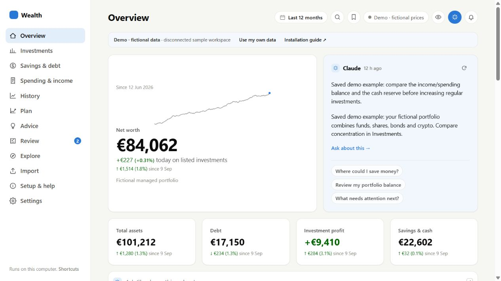
Open Investments → Overview. Asset classes and relevant accounts filter the same selection. Daily/History switches change the chart without changing your recorded holdings.
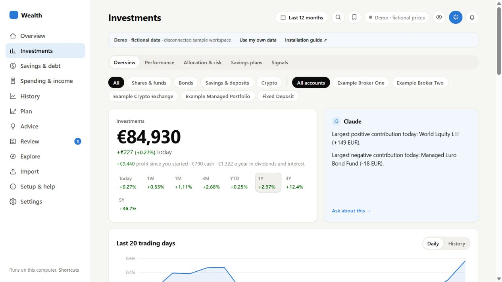
Choose Performance. Recorded account values can be charted immediately. Adjusted returns remain unavailable until external-flow coverage is confirmed; this sample intentionally demonstrates that safeguard.
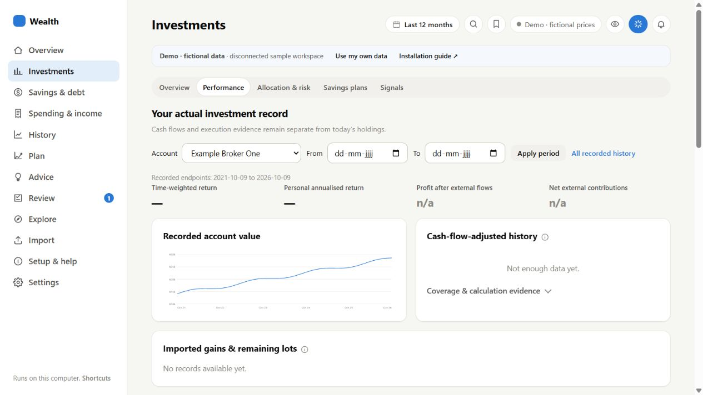
Choose Allocation & risk. Compare concentration, sector/region/currency proxies and a covered-holdings risk model. A modeled basket is distinct from the return of your actual trades.
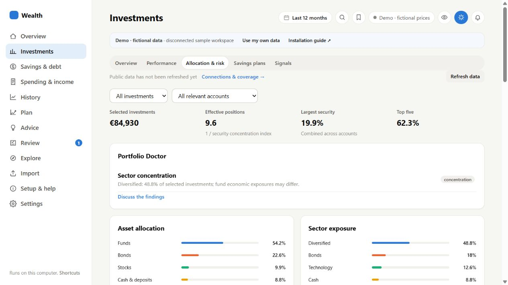
Choose Savings plans. See each amount, frequency, account, monthly equivalent and next execution. Add/Edit changes dashboard records; it never places orders with a broker.
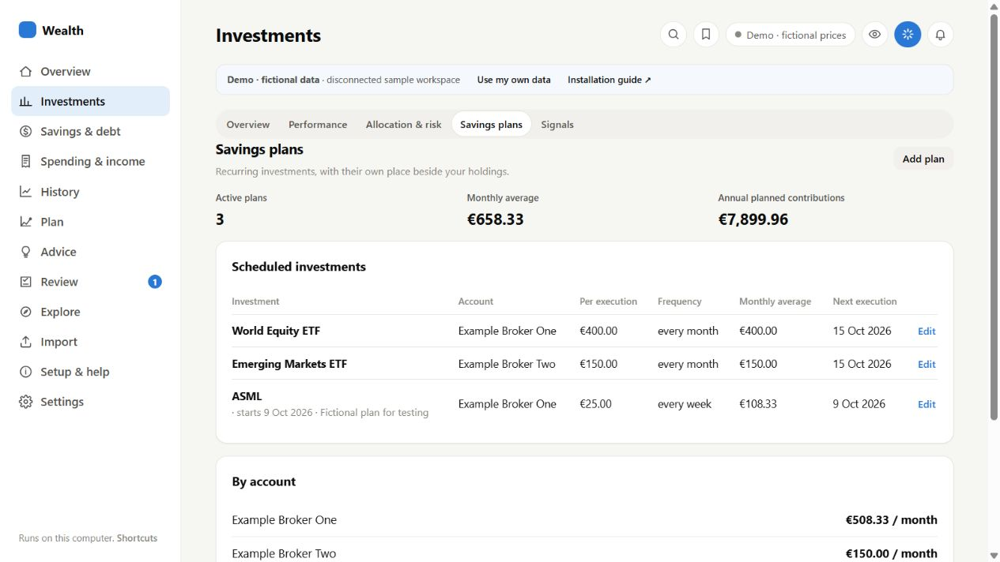
Open Savings & debt → Overview. Flexible balances, saved rates, idle cash, reserves and debt sit together. Fixed deposits and securities stay in Investments.
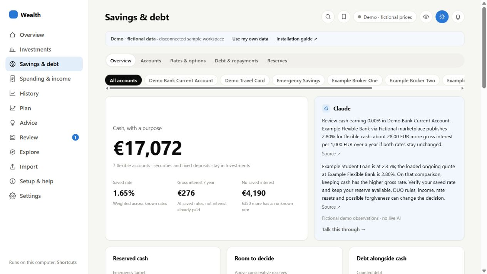
Choose Accounts and select Emergency Savings. Details include balance dates, access, purpose, saved rates and earnings. Scroll down for balance history and evidence; unknown protection or interest-paid figures stay unknown.
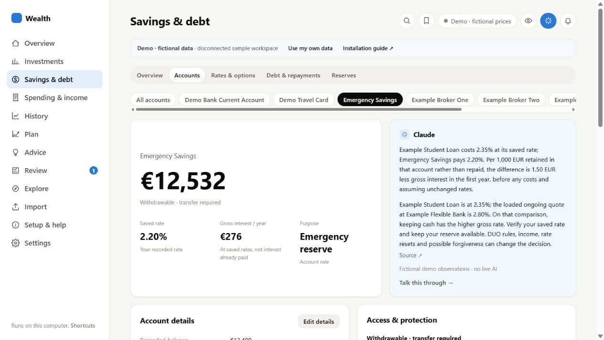
Choose Rates & options. Compare an amount and baseline rate, and decide whether to include introductory offers. These demo banks and quotes are fictional. Personal live mode retrieves supported public product pages.
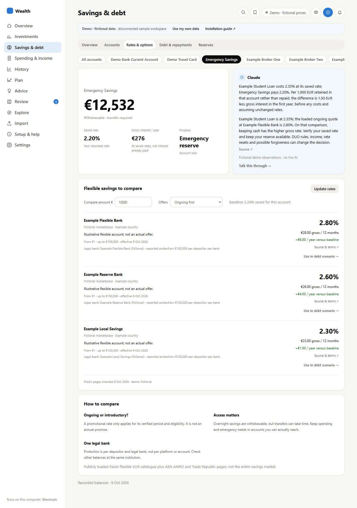
Choose Debt & repayments, enter an amount and select Compare choices. Both paths use the same upfront money and monthly budget. The graphs illustrate constant-rate assumptions; they do not change balances or model future DUO forgiveness.
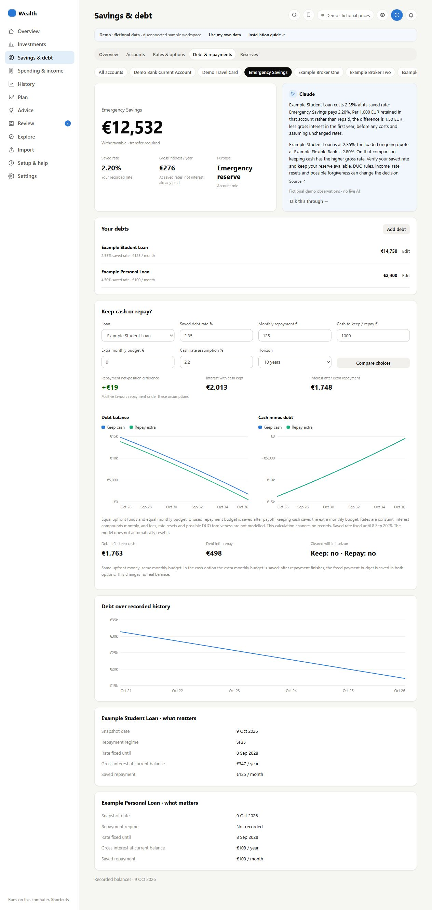
Open Spending & income → Overview. Change account chips and date range, then inspect categories or monthly bars. Internal transfers should be classified separately from spending.
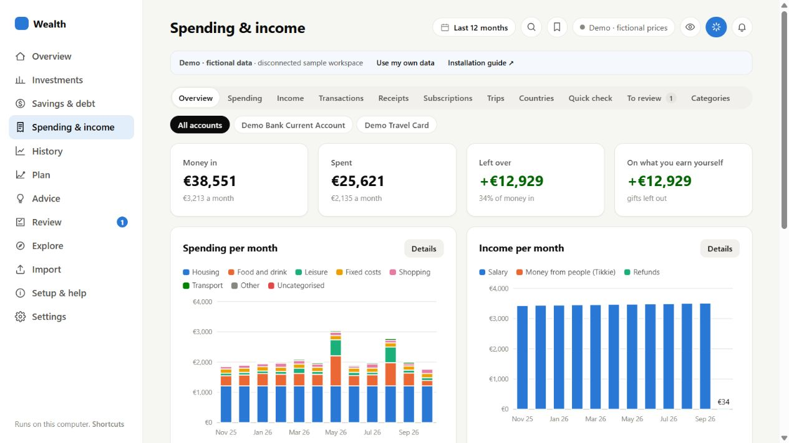
Click a spending category. The popup has just Sort by (Date/Amount) and Ascending/Descending. Open in Transactions carries the selection into the full transaction view.
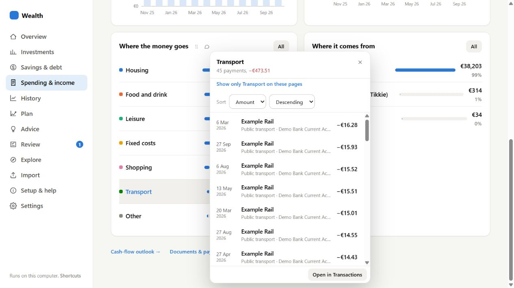
Choose Income in Spending & income. Monthly history, sources and recorded incoming transactions remain under the same navigation and account chips.
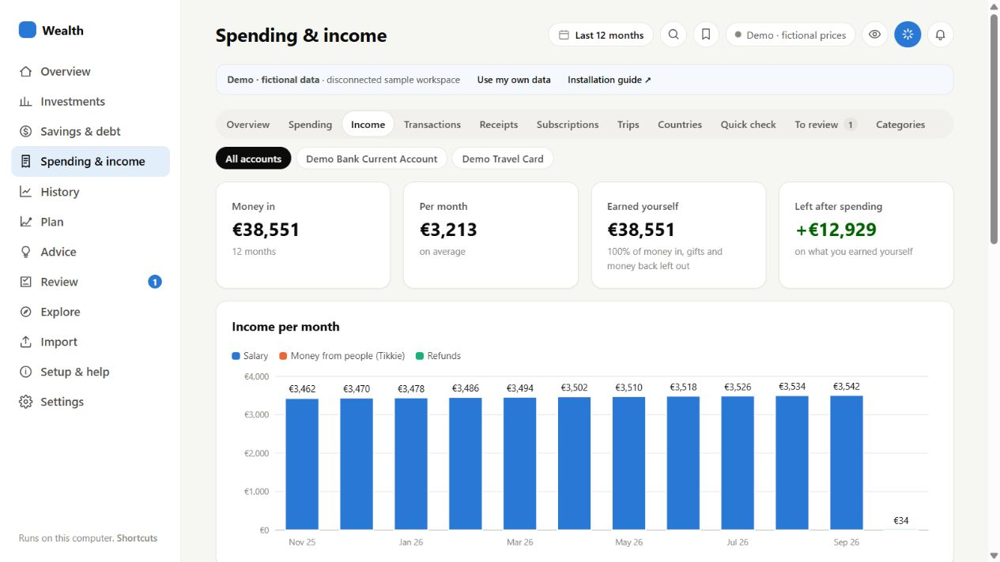
Choose Receipts and open Example Demo Shop. Two fictional products reconcile to one €84 payment. Product categories can split that existing payment without creating another expense; keep source evidence attached.
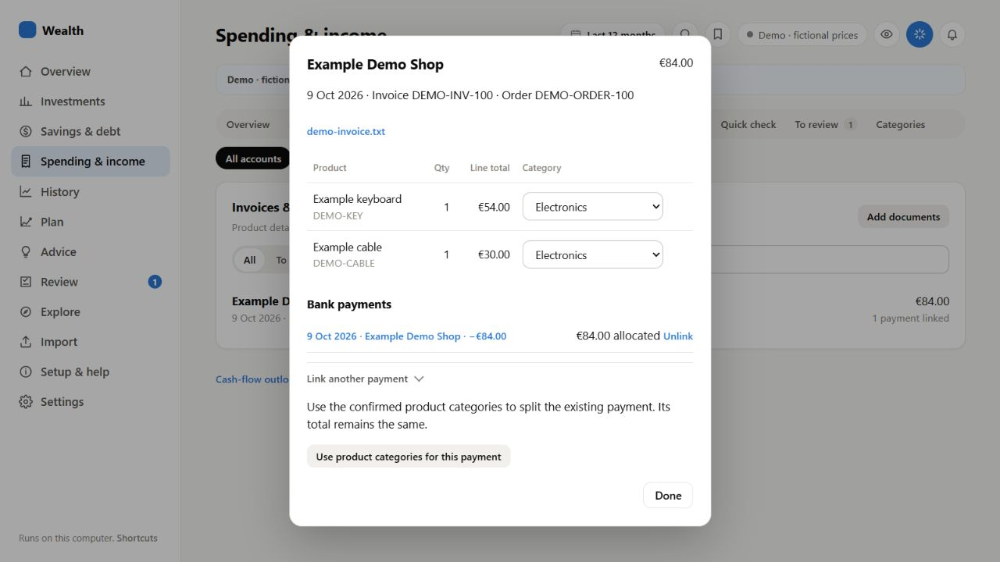
Open Explore → Company research, type ASML.AS and select Open research. The demo includes fictional financials, news and daily closes. The blue observations card can start a scoped conversation in personal mode once AI is connected.
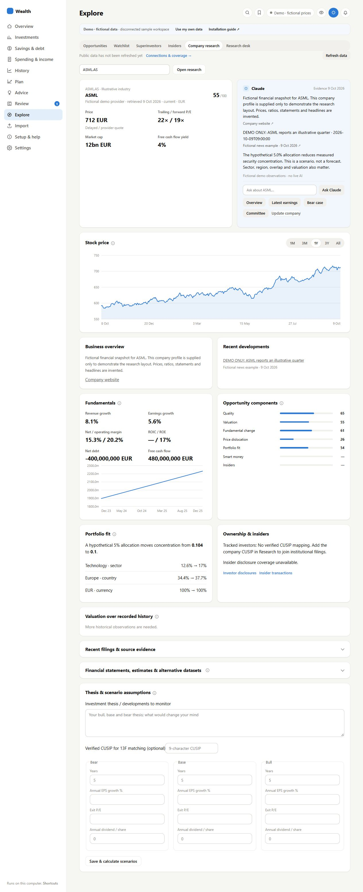
Open Import. Claude/OpenAI switches choose the configured importer. Download the marked sample CSV from Setup & help to try a deterministic import without AI. Recognised bank CSVs apply directly with a summary and Undo; review the resulting records.
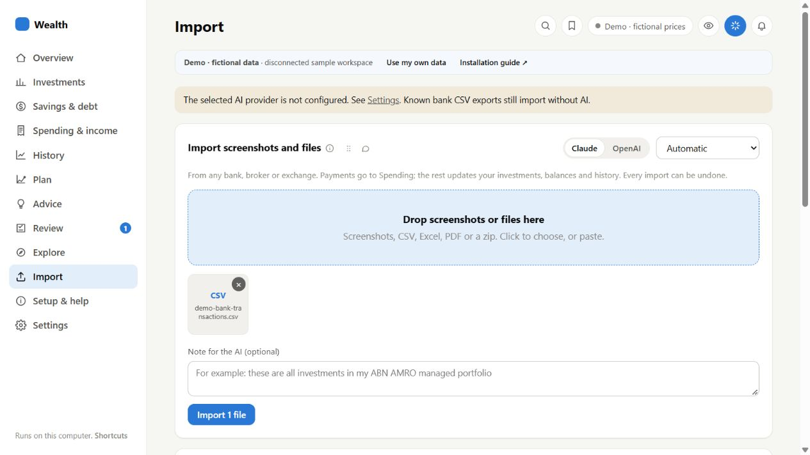
Open Setup & help. The demo tour and sample download need no account or packages. Start my personal workspace creates/reopens a different data folder instead of mixing real records with examples.
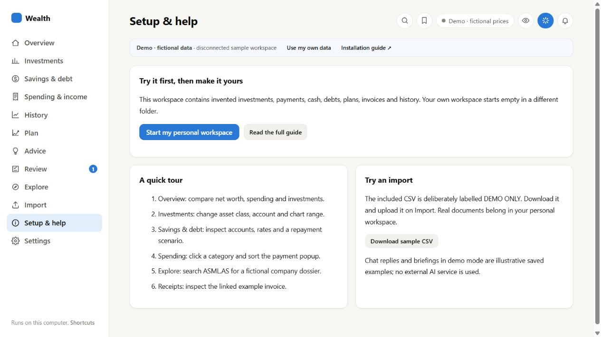
The separate personal workspace starts with no sample financial records. Install optional packages, choose desired features, save/restart, then configure your own providers. Leave unwanted connections disabled.
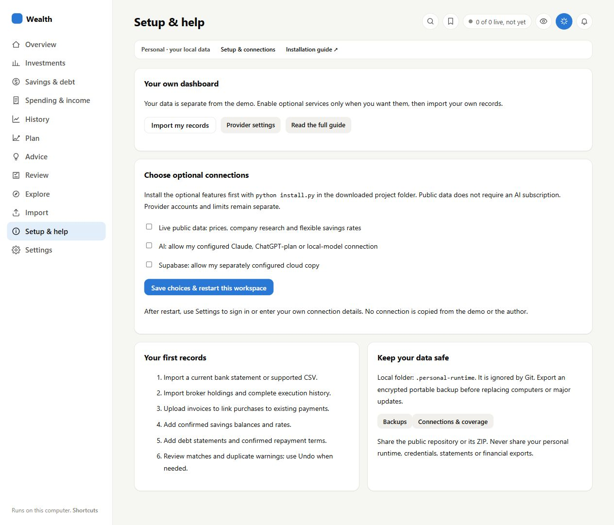